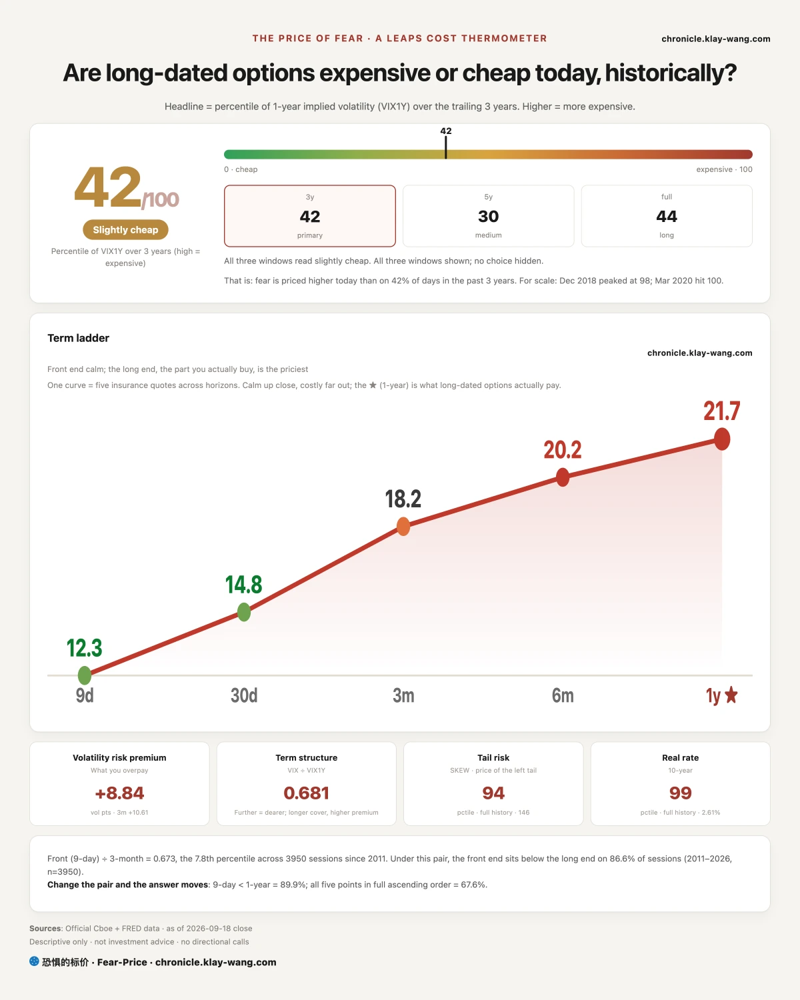
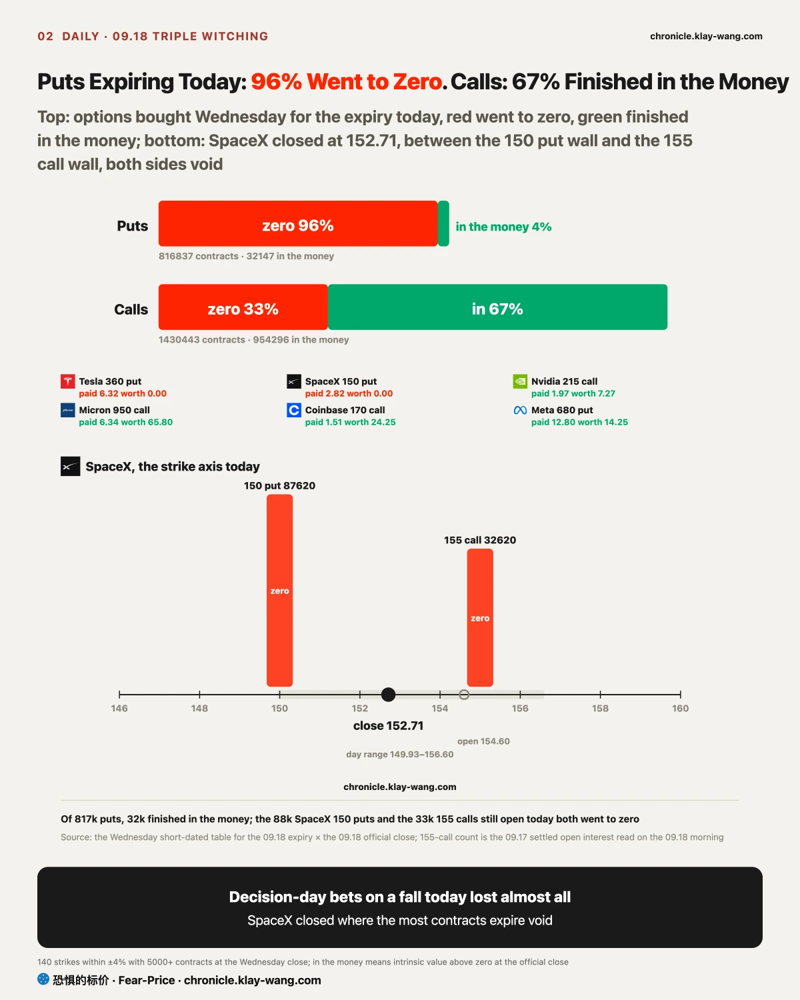
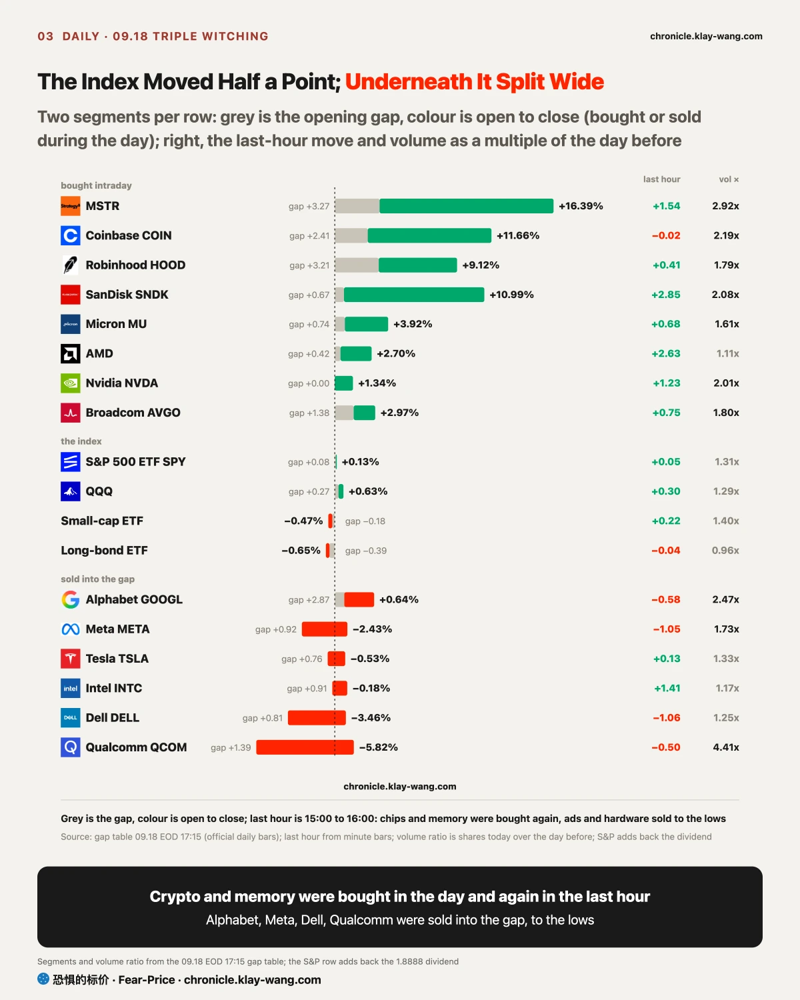
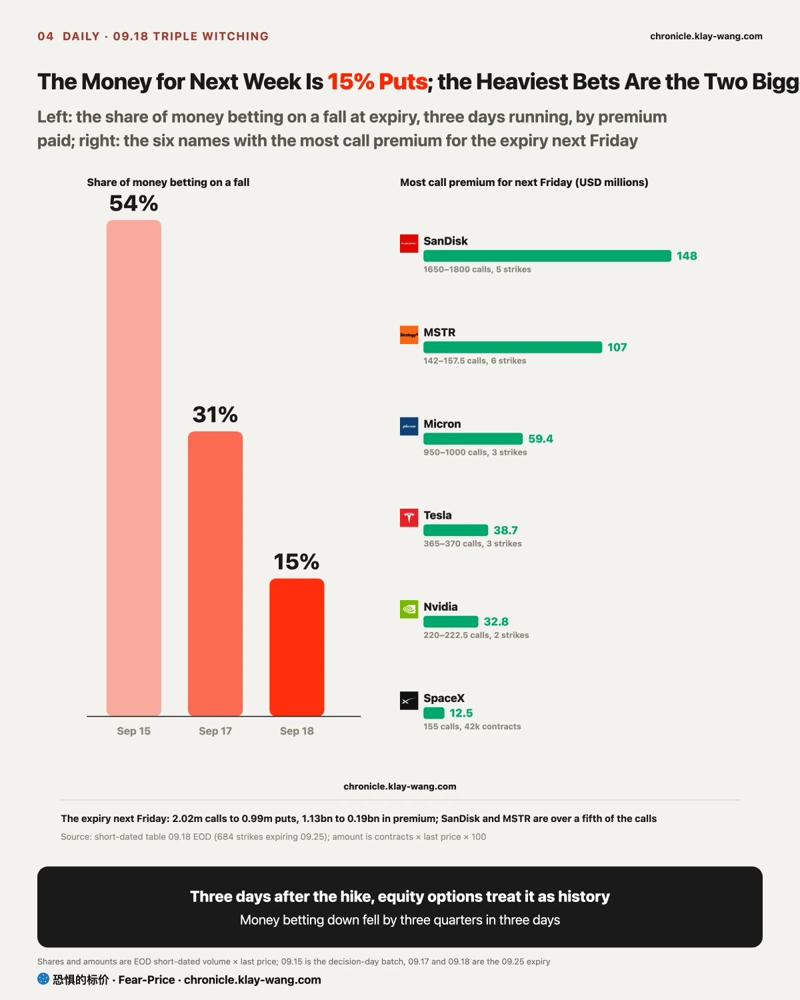
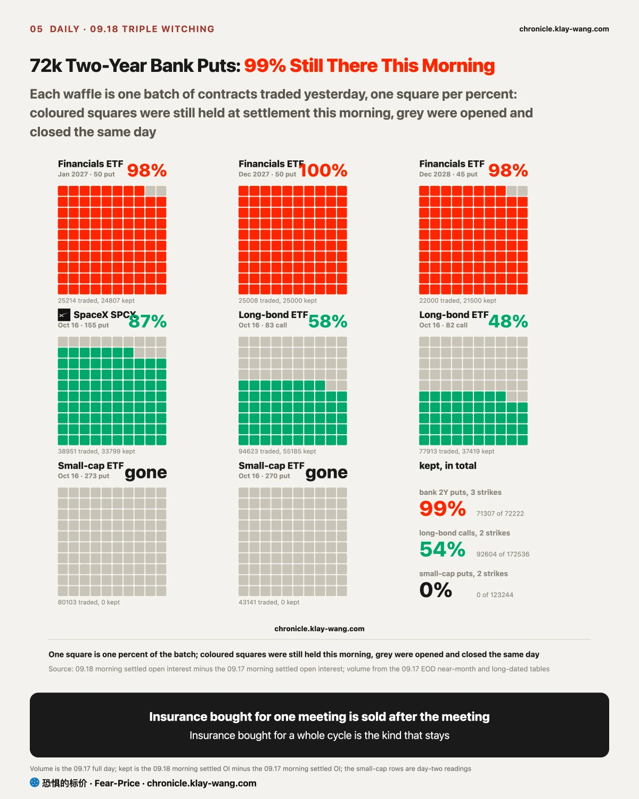

Fear-Price Index · Sep 18, 2026 · reading 41.8/100: one-year volatility VIX1Y at 21.74, in the 41.8th percentile of the past three years, where high means expensive. Daily ledger and definitions → chronicle.klay-wang.com · Please credit: Fear-Price Index
One-year insurance made a round trip this week: 42.3 last Friday, 49.3 on decision day, 41.8 today. Protection bought for the meeting went back to its starting point once the meeting was over, and one-month insurance is still getting cheaper, VIX 14.81, CNN Fear and Greed 29.1, our K index, one divided by the other, at 1.97, which needs the VIX above 29 to break 1, with the history at chronicle.klay-wang.com/kindex. The one thing to keep: stock insurance is retreating while rate insurance climbed back today, the price of rate protection from 76.22 to 80.64, the same event as the two-year yield rising 8 basis points.

Wednesday was decision day, and that day someone bought options expiring today: 820k puts and 1.43m calls. At the close today, 96% of the puts were worth nothing and two thirds of the calls finished in the money. Whoever bet on Wednesday that today would fall lost almost everything.
SpaceX was the textbook strike of the day. Yesterday I wrote that the market was betting on an open above 155; it opened below, was at 151 by late morning and closed at 152.71. The 155 calls still open today went to zero, and so did the 150 puts bought Wednesday, both sides lost. The close landed where the most contracts expire worthless, as quarterly expiries often do: both sides pay, the market makers collect.

Everyone said two trillion dollars of options expiring today would bring downside volatility. The S&P spent the day inside 758 to 762 and closed at 761.69; the 750 to 768 from yesterday held. The equal-weight S&P and small caps both lost close to half a point; the index was flat because the heavyweights held it.
Underneath it split, and the last hour showed it most clearly. Chips and memory rose all day, bought from open to close, and the last hour was all buying: SanDisk, AMD, Marvell, Arm and Nvidia all closed in the top tenth of the range of the day, the semiconductor ETF did four tenths of its volume in that hour, and Nvidia traded twice the volume of Thursday. Sold in the same hour were AppLovin, Dell, Meta, Alphabet and Qualcomm, closing near the bottom tenth. The index itself barely moved in the last hour; the late money was all in single names, which says witching-day money only picks what pays today. If fewer than half of the memory and crypto calls for next week survive the Monday settlement, the buying in the session was passing money too, and this line is taken back.

SanDisk rose eleven percent today with less than a point of it at the open; the rest was bought in the session, and the last hour added almost three more points to close at the high of the day on double volume. In options, the calls betting on it for next week carried about 150 million dollars of premium, the heaviest bet among the names we track, and its one-year insurance rose the same day, so the buyers are buying protection as they buy. At 16.7 times book it has been cheaper on only 16% of days in the past year; it sits 68% above its 200-day line, with the 20-day high at 1807 just overhead. It rose on two things today, a 14 billion dollar buyback and Citi calling a DRAM shortage that lasts to 2031, and the market priced the best case first. At this position, if it were me, either wait for it to hold 1807, or wait for the Monday settlement and see whether half of that 150 million in calls stays; staying means someone is there to take it, leaving means witching-day money passing through.
The three crypto stocks have the same shape. MSTR rose sixteen percent, bought from open to close, closing at the high of the day on nearly three times normal volume. Bitcoin reclaimed 80000 and 170 million dollars of shorts were liquidated in an hour. In options, MSTR carried about 110 million dollars of calls for next week while buying halving protection the same day; one-month insurance on the three rose three to four points at once, the most of the 42 names. A rally driven by short covering makes insurance cheaper; a rally where the buyers also buy protection makes it dearer, and today was the second kind: one-month protection on Coinbase got about 15% dearer in a day. MSTR sits 39% above its 50-day line, at 1.7 times book, dearer than on nine tenths of days in the past year, a 70% premium to the bitcoin it holds; Coinbase sits just above its 200-day line. See how many of the MSTR calls survive the Monday settlement; more than half is the number before chasing.
The banks are the mirror image. Yesterday I wrote that someone bought three put strikes on the financials ETF expiring 2027 to 2028, like one buyer laying a ladder; the settlement this morning, the contracts still held when the next day opens, showed 99% of the 72k still there. Also kept overnight: more than half of the long-bond October calls, nearly nine tenths of the SpaceX one-month puts, and not one of the small-cap October puts. Insurance bought for one meeting is sold once the meeting is over; insurance bought for a whole hiking cycle is the kind that stays. Goldman closed below its 200-day line at 949 today, down 8.5% on the week, all five big banks down and all but JPMorgan closing in the lower part of the day; its one-year insurance rose 4.5 points on the week, the largest rise of any name, while the one-month unwound yesterday and ticked up again today at Citi and JPMorgan. At 13.7 times earnings, cheaper than on nine tenths of days in the past three years: cheap, broken and with insurance rising, all three at once, the market prices the banks by the cycle, not by one meeting. One thing went the other way today: 36k year-end calls on the financials ETF traded, two-year protection and three-month upside at the same time. At this position, if it were me, either wait for the one-year insurance to stop rising, or wait for the market pricing of an October hike to fall from about sixty percent; until one of those happens, cheap is only cheap.
Long bonds are the other half of the bank story. The two-year yield rose 8 basis points today to 4.74%, up 12 on the week and a step from its April 2024 high; swaps price an October hike at about sixty percent and a bit more than one more by year end. The price of rate protection came within 0.22 of 76 yesterday and climbed back to 80.64 today. The long-bond ETF closed at 81.25, a point above its one-year low; in options, after three days that added well over 100k calls, puts arrived today, 35k each in two October strikes, but both strikes already held far more than that, so this may be old positions closing; the Monday settlement will tell. The futures layer did not follow spot down either: spot VIX at 14.81, the October future near 18 and slightly higher on the day; in the positioning report, hedge funds have been cutting their short volatility position for three weeks while asset managers add to it. S&P one-month insurance sits at 12.29, not back above 14, so the line that the October protection was bought for witching holds.


Alphabet gapped up nearly three points and gave most of it back in the session, closing in the bottom tenth of the range of the day on two and a half times normal volume. Its options went the other way, calls seven to one over puts, with fresh far out-of-the-money calls for early October. At 17.5 times earnings it is cheaper than on 95% of days in five years. When the tape sells, the options bet up and the valuation is cheap, whether it holds 349 at the Monday open matters more than any of the three layers. Meta gapped up and sold off to the bottom tenth; the first junk bond for a Meta-linked data center priced with four times the demand, the money was borrowed and the stock was sold. Dell closed at the low of the day with puts six times calls, at a multiple dearer than on nine tenths of days in three years; the puts I noted yesterday, locking profit above 588, were proved right today. Qualcomm fell on four times normal volume with nobody buying puts, profit taking. Crypto and memory were bought in the session, these four were sold into the open, and the difference is who had something on the books that pays today: SanDisk had a buyback, MSTR had bitcoin, Meta had newly borrowed debt.
Of the four set yesterday, three were right and one fell 20 cents short.
No trading advice; only prices converted into numbers you can judge yourself.
If you hold memory or crypto stocks: the Monday settlement shows how much of the money betting on them next week stays, 150 million dollars on SanDisk, 120k contracts on MSTR; more than half means someone is there to take it. The chasers are buying protection, and anyone chasing with them should carry some too.
If you hold banks: Goldman is below its 200-day line at 949, 70k two-year puts are still open, and 13.7 times is cheap; cheap kept getting cheaper every day this week. Watch for the day one-year insurance stops rising.
If you hold chips: Nvidia insurance is about as cheap as it has been in three years, so protection costs the least it has; AMD and Intel sit 58% and 41% above their 200-day lines, wait for the pullback.
If you hold index funds: no meeting next week, only the 09.25 expiry with its calls, and the index keeps leaning on chips and memory.
今天是三巫日，季度期权集中到期。周三议息那天有人买了 82 万张押今天到期的看跌，收盘 96% 归零；看涨 143 万张里 67% 价内。SpaceX 收 152.71 正好落在 150 看跌墙和 155 看涨墙中间，两边 12 万张一起作废，赢的只有卖两边的人。标普全天只在 758 到 762 之间走，昨天写的 750 到 768 成立。
指数没动，底下拉开了，尾盘看得最清楚：最后一小时闪迪再涨 2.85%、AMD 2.63%、英伟达 1.23%，全收在全天最高；戴尔、Meta、谷歌、高通被砸到全天最低。三层同向的四组值得盯：闪迪 +11% 全是白天买的，下周看涨 1.5 亿美元全市场最重，市净率 15 倍离 200 日线 68%，20 天高点 1807 在头顶；加密三只涨 9% 到 16%，MSTR 下周看涨 12 万张，一个月保险同时贵了 3.7 点，追的人自己在买保护；银行反向，两年期看跌 7.2 万张今早留了 99%，高盛 942 跌破 200 日线 949，13.9 倍便宜但没人要；长债，两年期收益率 +8bp 到 4.74%，利率保护的价钱涨回 80.64，债市没把加息当过去式。
下周到期的钱看跌只占 15%，周二 54%，昨天 31%，股票期权三天就把加息当过去式。英伟达是这批里最便宜的，27.8 倍比五年 99% 的时间便宜，一个月保险分位 0.4，配保护没有比今天更便宜的日子；谷歌高开被卖、期权押涨、估值便宜，三层不同向，周一守不守 349 最要紧。
今天值得带走的三句话：押今天会跌的 82 万张看跌 96% 归零，下周的钱看跌只占 15%，股票期权三天就把加息当过去式，债市没有；三巫日的新钱在存储和加密，尾盘被接收在最高，买的人自己在配保护，周一结算留几成决定是新钱还是过路钱；银行是股票里唯一按周期定价的，两年期看跌留了 99%，高盛跌破 200 日线。